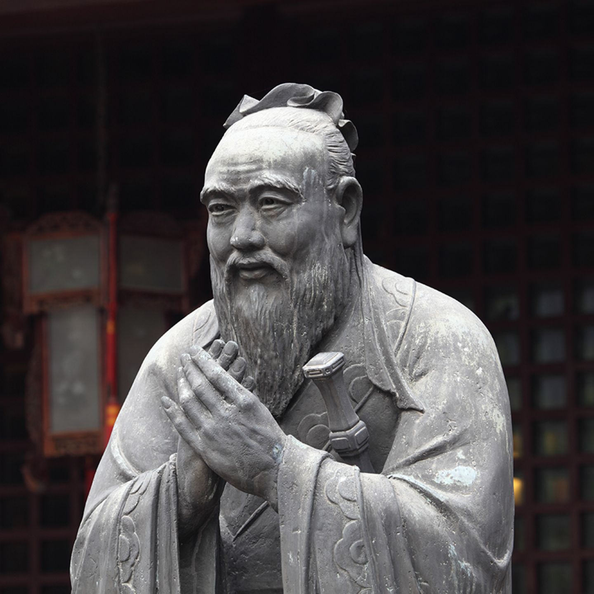

Als Mutter, Freundin, Arbeitskollegin, Tochter oder welche Rolle wir auch sonst im Alltag so einnehmen, sind die ruhigen Momente ganz für uns selbst rar.
Vielleicht kennst du das auch: Wir erfüllen permanent die Wünsche und Bedürfnisse von anderen und stellen uns selbst dabei ganz hinten an. Doch um gesund zu bleiben ist es wichtig, dass du genügend Auszeiten und Ruhe ganz für dich alleine nimmst.
Das bedeutet auch, dass wir ab und an mal Nein sagen müssen. Viele Frauen trauen sich das nicht, aus Angst jemanden zu verletzen. Stattdessen opfern wir uns für die Familie, den Partner, die Arbeitskollegen oder den Chef oder auch für die beste Freundin und brennen regelrecht aus.
Dass das Immunsystem dadurch geschwächt und mental gelitten wird ist außer Frage.
Deshalb mein Tipp: Plane dir genügend Auszeiten nur für dich ein und finde eine Routine für deine “Me-Time”.
"In der Ruhe liegt die Kraft.” Konfuzius
Schon der chinesische Philosoph und Gelehrte Konfuzius wusste es. In der Ruhe liegt die Kraft. Buddha wusste es ebenfalls und die Mönche machen es ihm nach. In Stille sein und Ruhe finden. Eine von vielen Möglichkeiten sich selbst Zeit und Ruhe zu schenken ist die Meditation.
Meine liebste Form der Meditation ist die Gehmeditation.
Während meines Vipassana in Thailand hatten wir zweimal am Tag je 2 Stunden Sessions, in denen wir in den Wald gegangen sind. Es gibt verschiedene Formen der Gehmeditation – gerade das Tempo der Bewegung ist sehr unterschiedlich. Bei manchen Praktiken scheint es so, als würdest du beim Laufen fast umfallen, bei anderen läufst du ganz normal.
Auch hier gilt: Finde deine optimale Art und Weise! Es gibt kein Richtig oder Falsch!
Meditation findet in unseren Breitengraden immer mehr Anklang. Eine äußerst alltagstaugliche und effektive Form ist die Gehmeditation. Der Fokus wird auf das achtsame Gehen gelegt, das im Hier und Jetzt passiert. Ankommen mit jedem Schritt und den Geist zur Ruhe bringen.
Gesund bleiben durchs Gehen. Lust mehr Ruhe & Zeit für dich mithilfe einer
Gehmeditation in deinen Alltag zu holen?